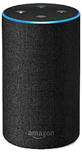
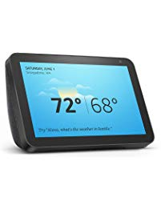
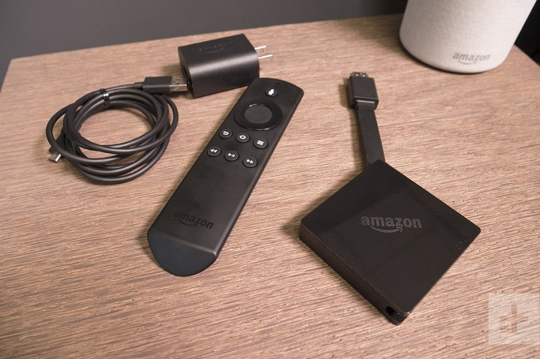
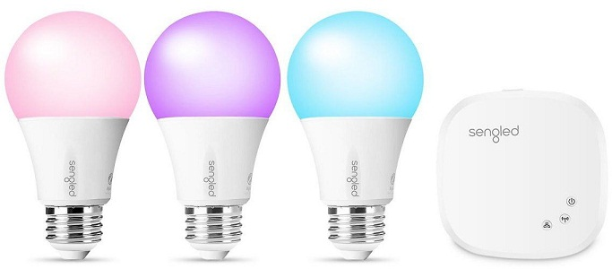
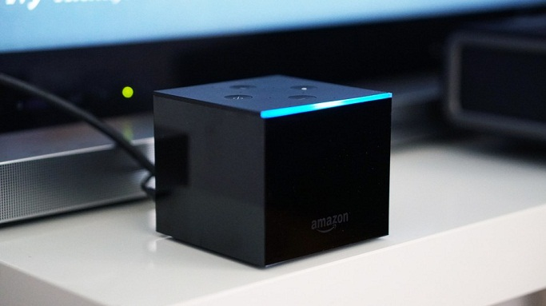
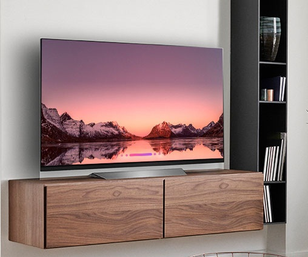
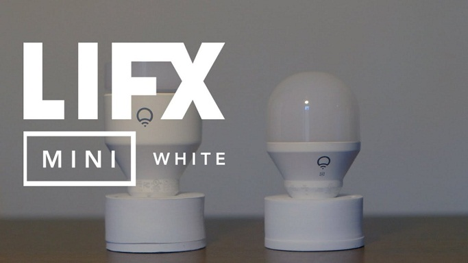
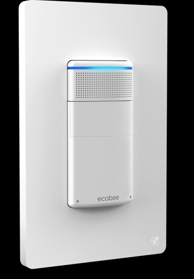

Nama Tim :
1. Iskandar Muda Dinata P [161112928]
2. Muhammad Akbar [161113991]
3. Nilam Apridayanti [161112880]
4. Ihsan Wiguna [161111671]
5. Muhammad Dendi Ananda [161110081]
Apa Itu Amazon Echo?

Amazon Echo
Amazon Echo adalah sebuah inovasi baru speaker yang awalnya hanya digunakan sebagai pengeras suara kini diubah menjadi speaker pintar yang mamapu melakukan banyak hal, yaitu pengguna bisa berinteraksi dengannya. Amazon Echo di buat oleh perusahaan dari Amerika Serikat. Selain itu, Amazon echo juga dapat digunakan sebagai Smart Lock Home (Perangkat Kunci Pintar).
Speaker ini dapat di gunakan sebagai kunci rumah otomatis. Tujuan utama pembuatan Amazon Echo adalah sebagai sarana hiburan, asisten pribadi dan remote kontrol bagi rumah pintar. Amazon Echo adalah sebuah inovasi baru dari speaker yang awalnya hanya digunakan sebagai pengeras suara kini diubah menjadi speaker pintar yang mamapu melakukan banyak hal, yaitu pengguna bisa berinteraksi dengannya.
Speaker echo
Speaker pintar adalah jenis speaker nirkabel dan perangkat perintah suara dengan asisten virtual terintegrasi yang menawarkan tindakan interaktif dan aktivasi hands-free dengan bantuan satu "kata panas" (atau beberapa "kata panas"). Beberapa speaker pintar juga dapat bertindak sebagai perangkat pintar yang memanfaatkan Wi-Fi, Bluetooth, dan standar protokol nirkabel lainnya untuk memperpanjang penggunaan di luar pemutaran audio, seperti untuk mengontrol perangkat otomatisasi rumah. Ini dapat mencakup, tetapi tidak terbatas pada, fitur-fitur seperti kompatibilitas di sejumlah layanan dan platform, koneksi peer-to-peer melalui jaringan mesh, asisten virtual, dan lainnya. Masing-masing dapat memiliki antarmuka dan fitur yang ditunjuk sendiri di rumah, biasanya diluncurkan atau dikendalikan melalui aplikasi atau perangkat lunak otomasi rumah. Beberapa pengeras suara pintar juga menyertakan layar untuk menunjukkan kepada pengguna respons visual. Speaker pintar dengan layar sentuh dikenal sebagai layar cerdas. Walaupun memiliki faktor bentuk yang mirip dengan komputer tablet, tampilan cerdas berbeda dalam hal penekanan pada antarmuka pengguna handsfree dan fitur asisten virtual
Smart Echo dengan Alexa
Fitur Terbaik Echo Dot dengan Alexa adalah sebagai berikut:
1. Musik
Tujuan yang paling jelas untuk Amazon Echo adalah menggunakan pembicara untuk mendengar musik dan meminta lagu yang didengarkan menggunakan suara. Amazon echo Dot dapat diintegrasikan dengan layanan Amazon Music (membeli Echo Dot Anda mendapatkan kesempatan untuk berlangganan selama tiga bulan gratis, jika tidak maka akan digunakan secara gratis tanpa memilih lagu untuk didengarkan) atau bahkan dengan Spotify. Jika Anda tidak ingin berlangganan, Anda juga dapat mendengarkan musik dari radio Italia, berkat integrasi dengan TuneIn, yang gratis tanpa masalah. Anda kemudian dapat meminta untuk mendengarkan Radio DJ, atau radio dengan hits terbaru atau mendengarkan musik dari 80-an atau genre lainnya. Tentunya Anda juga dapat menggunakan earphone atau headphone dengan Echo Dot atau menggunakan sistem audio eksternal yang terhubung melalui Bluetooth.
2. Buku Audio
Karena Amazon juga memiliki toko Ebook terbesar di dunia, Kindle Store, Anda dapat menggunakan Alexa untuk membaca buku-buku yang Anda beli di Amazon, sehingga Anda dapat bersantai dan menutup mata tanpa membaca, hanya mendengarkan.
3. Control Your Smart Home
Alexa mungkin yang paling baik dalam mengendalikan lampu,
kunci pintu, peralatan, sakelar, dan perangkat rumah
pintar lainnya. Anda dapat menelusuri alat kompatibilitas
rumah pintar untuk melihat apa yang sedang dilakukan
Alexa,
tetapi berikut adalah beberapa ide untuk memulai:
- Kontrol lampu Anda. Anda dapat meminta Alexa untuk
menghidupkan atau mematikan lampu. Dia juga akan berubah warna jika lampu berubah warna.
- Buka atau tutup pintu garasi Anda . Pembuka pintu
garasi pintar seperti Garageio bekerja dengan Alexa.
- Ubah suhu . "Hai Alexa, atur suhunya menjadi 68."
Honeywell dan Ecobee hanyalah beberapa termostat yang bekerja dengan Alexa.
4. Gunakan asisten suara untuk alarm, pengingat, pengatur waktu, janji, daftar yang harus dilakukan, dll.
Anda dapat memberi tahu Alexa: " Hari ini saya harus
melakukan belanja ", untuk menandai komitmen ini dan
kemudian, kemudian, tanyakan Alexa, " apa yang harus saya
lakukan hari ini " untuk diingatkan untuk melakukan
belanja. Anda juga dapat mengatur alarm dengan Alexa,
berguna jika Anda memposisikan Echo dot di kamar tidur.
5. Permintaan vokal dari semua jenis
Seperti asisten suara apa pun, Alexa menjawab semua
pertanyaan yang jawabannya didefinisikan dengan baik. Jadi
Anda dapat menanyakan jam berapa besok, berapa hari yang
hilang di Hari Natal, yang merupakan sungai terpanjang di
dunia, apa yang harus dilihat di Milan, meminta untuk
menyanyikan lagu, meminta lelucon, meminta ramalan bintang
hari ini lebih banyak lagi.
Fungsi Alexa
- Untuk interaksi suara
- Memutar musik
- Membuat daftar hal yang harus dikerjakan
- Mengatur alarm
- Streaming podcast
- Speaker bluetooth
Aplikasi dan Layanan yang telah terhubung dengan Alexa
Uber, Just Eat, National Rail, The Guardian, The Telegraph, Sky Sports, Jamie Oliver, Fitbit, Skyscanner, TuneIn, RadioPlayer, Spotify, Laundrapp, BMW, Tado, Netatmo, Hive, Neato, Philips Hue, EDF Energy, TP Link, WeMo, Honeywell, SmartThings, Nest, Sonos, dan The Grand Tour.
Beberapa Perangkat Smart Home Terbaik yang Bisa Diperintah Pakai Alexa
- Amazon Fire TV
- Lampu Warna Elemen Plus Led Pintar Sengled
- Fire TV Cube



Beberapa Perangkat Smart Home Terbaik yang Bisa Diperintah Pakai Alexa
- TV LG Premium
- Lifx Mini
- Sakelar Ecobee



Kelebihan Alexa
- bisa beradaptasi dengan pola bicara, kosa kata, dan preferensi personal
- Alexa dapat memutar musik dari layanan streaming seperti Apple Music dan Google Play Music dari ponsel atau tablet
- Audio yang jelas dan keras
- Output audio 3,5 mm dan Bluetooth
- Desain yang ditingkatkan
- Harga yang sama dengan model lama
Kelemahan Alexa
- Tidak lagi menggunakan USB
- untuk berinteraksi dengan Alexa hanya tersedia dalam bahasa Inggris, Jerman, Prancis, Italia, Spanyol, Portugis, Jepang, dan Hindi
- Tidak ideal untuk musik
- Kecepatan hasil output bergantung pada koneksi internet yang digunakan.
Link Refrensi
https://id.digitalinfosolution.com/56390-how-alexa-works-on-amazon-echo